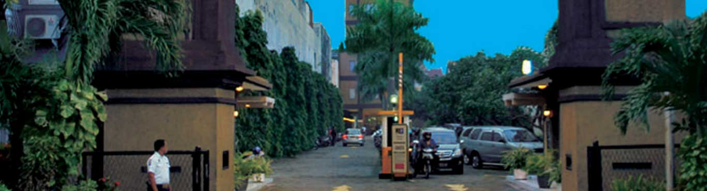

-
 Selamat Datang di
UNIVERSITAS NAROTAMAMenuju Teknologi Tertinggi
Selamat Datang di
UNIVERSITAS NAROTAMAMenuju Teknologi Tertinggi -

Selamat Datang di
UNIVERSITAS NAROTAMAMenuju Teknologi Tertinggi
SEJARAH NAROTAMA
Pada awal tahun 1981 beberapa orang dosen UNAIR dan ITS serta beberapa tokoh masyarakat tergabung dalam Yayasan Pawiyatan Gita Patria ingin mengabdikan diri di bidang pendidikan dengan mendirikan suatu universitas. Ketika sampai pada saat memilih nama universitas dipilih nama NAROTAMA. Pilihan ini didasarkan pada latar belakang ketokohan sejarah NAROTAMA dikaitkan dengan jiwa pengabdian kepada Negara maupun jiwanya sebagai tokoh yang mendukung, membina dan membesarkan AIRLANGGA. Tersirat dalam pemilihan nama tersebut adalah keinginan universitas yang baru didirikan tersebut, yaitu UNIVERSITAS NAROTAMA dapat memdampingi dan menerapkan cita-cita dan harapan Universitas Airlangga yang sudah ada. Tulisan "NAROTAMA Keberadaan, Perjuangan dan Kesejarahan", ini adalah hasil kajian Prof. Dr. Aminuddin Kasdi dalam rangka Dies Natalis/Lustrum IV Universitas Narotama semoga menjadi berkah bagi masyarakat memahami tokoh Narotama dan menjadi inspirasi dan pendorong bagi seluruh Civitas Akademika dan Alumni Universitas Narotama Surabaya, Narotama Keberadaan Perjuangan dan Kesejarahannya Latar Belakang Narotama adalah seorang tokoh, yang brehasil naik tangga sosial (social climbing) menjadi seorang pejabat tinggi. Hidup pada abad ke 11 yaitu zaman pemerintahan Airlangga kerajaan Kahuripan.Narotama adalah seorang besar di Indonesia dari zaman kuna yang tidak jelas asal-usul dan setelah meninggal tidak diketahui tempat pemakamannva (pendarmaannya). Sebagai penghormatan kepadaorang diduga berasal dari kalangan kebanyakan yang berhasilmenjadi pejabat tinggi dan pembantu setia Airlangga itu, sejak awaltahun 1980-an di Surabaya namanya diangkat dan diabadikansebagainama sebuah perguruan tinggi: Universitas Narotama..